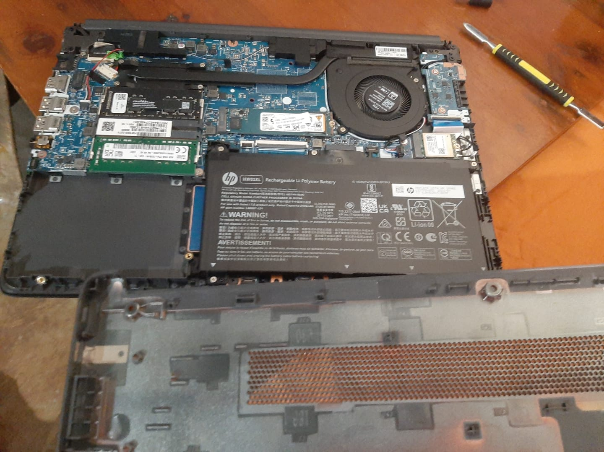
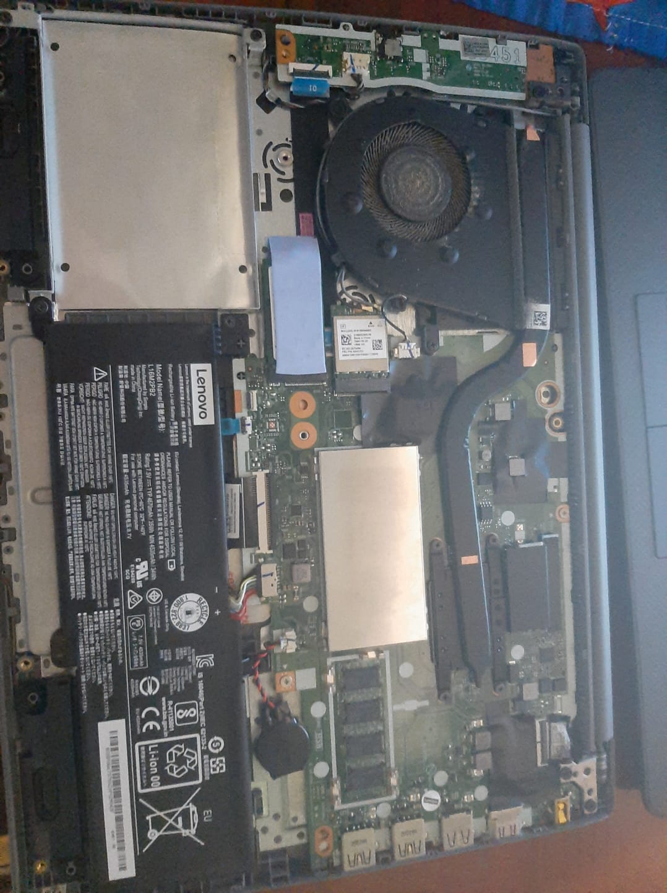

Perfil del Autor
Sobre mí
Estudiante de Ingeniería de Software.
Contexto de la Experiencia
Motivación y Diagnóstico Inicial
A inicios de octubre de 2026, mi laptop de uso diario presentaba temperaturas altas de hasta 85 °C y ruido excesivo en el ventilador al ejecutar tareas persadas. Decidí realizarle un mantenimiento preventivo completo por primera vez para limpiar el polvo acumulado y renovar la pasta térmica del procesador.
Desarrollo Cronólogico
Etapas del Proceso de Mantenimiento
Primero, desconecté la batería y retiré los 10 tornillos de la tapa posterior organizándolos por tamaño. Luego, retiré el polvo del ventilador usando una brocha antiestática. Finalmente, limpié la pasta térmica seca del disipador con alcohol isopropílico al 99% y apliqué una pequeña gota de pasta térmica nueva antes de volver a ensamblar el equipo.
Aprendizajes
Resultados obtenidos y Mejoras
Tras el ensamblaje, la temperatura en reposo bajó a 42 °C y el ruido del ventilador disminuyo considerablemente. Como aprendizaje principal, descubrí la importancia de organizar los tornillos según su longitud para no dañar la carcasa. Para una próxima ocasión, utilizaré una pulsera antietática en lugar de solo tocar metal para descargar la energía estática de mi cuerpo.
Recursos y Plan de Mantenimiento
Materiales e Insumos Utilizados
- Alcohol isopropílico al 99%
- Pasta térmica de alta conductividad
- Juego de destornilladores de precisión
- Brocha antiestática y lata de aire comprimido
Secuencia de la Intervención
- Desmontar la tapa posterior y desconectar el conector de la batería interna.
- Limpiar la pasta térmica antigua del procesador y disipar el polvo del ventilador.
- Aplicar la nueva pasta térmica y reensamblar la carcasa verificando cada tornillo.
"El único modo de hacer un gran trabajo es amar lo que haces. Si uno cuida sus herramientas, sus herramientas cuidarán de uno."
Registro y seguimiento de Actividades
| Actividad / Fase | Duración Aprox. | Observación Real | Estado |
|---|---|---|---|
| Desmontaje de tapa y desconexión de batería | 15 minutos | Organización estricta de 10 tornillos por tamaño en una bandeja. | Completado |
| Limpieza de polvo (ventilador y disipador) | 20 minutos | Retiro de pelusa acumulada en las aletas usando aire comprimido y brocha. | Completado |
| Renovación de pasta térmica y reensamblaje | 25 minutos | Limpieza con alcohol al 99% y aplicación de nueva pasta; verificación térmica exitosa. | Completado |
Evidencias Fotográficas y Recurso Multimedia


Formulario de Contacto y Consultas
Si tienes dudas sobre el proceso de mantenimiento preventivo, puedes enviarnos tus datos: